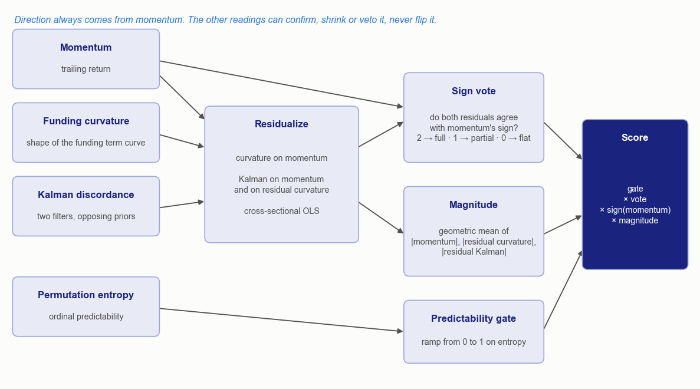
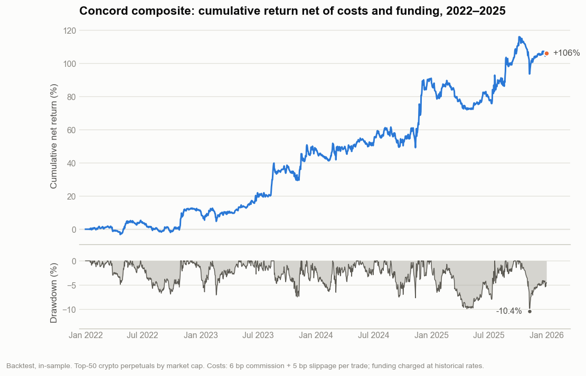
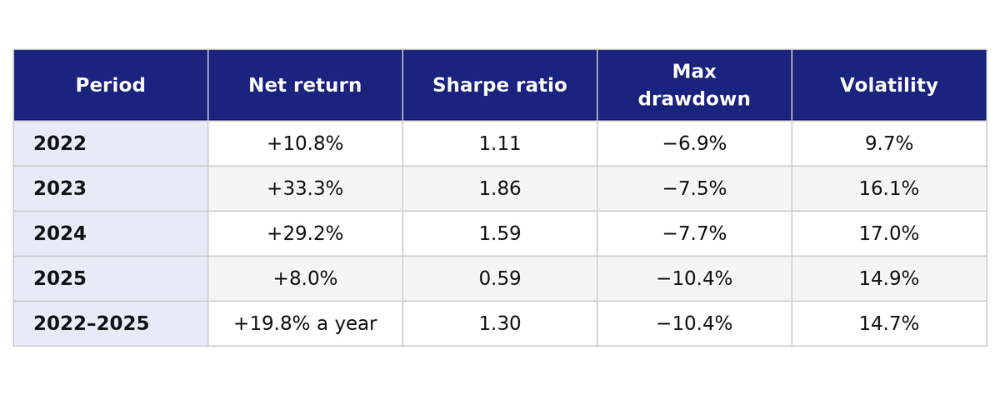

A crypto composite that trades only where three measurements agree.
Momentum has the deepest published record of any cross-sectional effect in crypto. It also fires on every asset with a recent trend, including the ones whose trend is noise. A composite built to tell the two apart trades momentum only where three unrelated measurements agree with it. From 2022 through 2025, on the 50 largest crypto perpetual futures, it returned 19.8 percent a year net of trading costs and funding, with a Sharpe ratio of 1.30, a maximum drawdown of 10.4 percent and a gain in every calendar year.
The three measurements come from fields well outside the usual crypto factor menu: ordinal-pattern entropy from nonlinear dynamics, the shape of a yield curve from fixed income, and a pair of competing Kalman filters from estimation theory. None of them sets direction. Each one decides how far momentum should be trusted, asset by asset, at every rebalance. The construction is called Concord here.
Photo: Anthony O'Neil, CC BY-SA 2.0, cropped
Three Readings From Three Fields
Ordinal entropy. Bandt and Pompe (2002) proposed permutation entropy, a complexity measure that looks only at the order of neighbouring values. Slide a window of length m along a return series, record which of the m! possible orderings each window shows, and take the Shannon entropy of their frequencies, normalised by its maximum:
A value of one means every ordering is equally likely, which is what a random walk produces. Lower values mean some orderings recur, and recurring order is structure. Zunino, Zanin, Tabak, Pérez and Rosso (2009) found that permutation entropy is lower in less efficient stock markets. The rationale for using it here is direct. A bet on a trend should pay when price formation has structure, and it should shrink when price formation looks random.
Funding-curve shape. A perpetual future has no expiry, so it is tied to spot by a periodic transfer: longs pay shorts a funding rate proportional to the gap between the two prices, as He, Manela, Ross and von Wachter set out. Averaging that rate over several nested horizons, from days to months, gives each asset a term curve. In government bonds, Cochrane and Piazzesi (2005) showed that a single tent-shaped combination of forward rates, a statistic of the curve's shape rather than its level, predicts excess bond returns with an R² of up to 0.44. Koijen, Moskowitz, Pedersen and Vrugt (2018) showed that carry predicts returns across asset classes. The crypto analogue fits a quadratic to mean funding against the logarithm of the horizon and keeps the curvature:
Level says how crowded a position is. Slope says whether the crowding is building. Curvature says whether that build-up is accelerating or bending over: it is the butterfly spread of the funding curve. The mechanism is leverage demand. Funding is what crowded leverage pays, and a crowd that is still accelerating behaves differently from one that is tiring. Whether the bond-market sign carries over to crypto was not assumed. It was left open as a construction choice and settled on the sample.
Competing filters. A Kalman (1960) filter estimates a hidden state from noisy observations. Here the hidden state is an asset's short-run expected return, and two filters run side by side on the same returns. One assumes that expected return persists from bar to bar. The other assumes it reverses. Each produces a posterior mean μ and variance P, and their discordance is a standardised gap:
When the recent path fits both stories, D is small and the reading says nothing. When it fits one story far better, D is large and takes the sign of whichever filter's estimate is larger in size. A regime that is decisively persistent or decisively reverting is one in which the recent past carries information about the next step.
From Readings to One Score
The four inputs are momentum, entropy, curvature and discordance. Each is first turned into a z-score across the universe on every rebalance date, with extreme values capped. From there on, a reading only matters relative to the same reading on every other asset.
Curvature and discordance are then residualised against momentum with a cross-sectional regression, and discordance is residualised a second time against the curvature residual. This is Gram–Schmidt orthogonalisation applied to factor scores. What remains of each reading is the part that momentum, and for discordance curvature too, did not already say.
The residuals then vote. On each asset, a reading agrees when its residual has the same sign as momentum. Two agreeing votes give the position its full weight. One agreeing vote gives it a partial weight. None sets it to zero. Size comes from the geometric mean of the three magnitudes, and entropy enters as a gate that ramps from zero to one:
Here m is momentum, κ⊥ and D⊥ are the residual readings, v is the vote multiplier and g is the gate.

Order of operations from readings to score. Schematic, no parameter values. Diagram: Vertex.
The gate is cross-sectional, not absolute. At intraday frequencies absolute permutation entropy barely moves. On hourly BTC/USDT returns from Binance's public market data, across 24 monthly windows from September 2024 to September 2026, it ranged from 0.991 to 0.997, always just under the value a random walk would produce. A fixed threshold on numbers that close together would switch almost every asset off, or almost every asset on. Ranked against each other on the same date, the same numbers sort the universe into the relatively structured and the relatively random.
The Choices That Shaped It
Momentum owns the direction. Of the four inputs, momentum has the deepest published record in the crypto cross-section: Liu, Tsyvinski and Wu (2022) found that market, size and momentum factors capture the cross-section of expected cryptocurrency returns. Curvature and discordance have no comparable record. A construction that let them flip a position would be betting on the weaker evidence. In Concord they can confirm a momentum position, shrink it or veto it, but never reverse it.
Residualise before voting. Funding moves with price, and a Kalman filter run on returns partly restates the recent return. Without the residualisation step, a vote of three would often be one opinion counted three times. With it, an agreeing vote is independent evidence. The order matters too. Discordance is residualised last, so its vote counts only what neither momentum nor curvature already carried.
Multiply, do not add. A weighted sum is compensatory. One strong reading can carry a position past two readings that contradict it. A product makes disagreement expensive. The geometric mean collapses toward zero whenever any one magnitude is small, and the vote removes a position outright when both residuals dissent. The cost is breadth: on many dates a large share of the universe carries little or no weight, and the book holds fewer names at higher conviction. A fourth reading added to the vote made the composite worse in every form tried. One more veto shrank the signal faster than it added information.
From Score to Book
The universe is the 50 largest USDT-margined crypto perpetual futures by market capitalisation, re-ranked daily from the previous day's ranks, with stablecoin and gold-token contracts excluded. At each rebalance the score is ranked across that universe. The top tail forms the long book and the bottom tail the short book, and the middle is left flat. Each name is sized in proportion to its score and inversely to its own volatility. The two books are balanced against each other, and the whole book is scaled to a volatility target under a cap on gross leverage.
Rebalancing runs on a fixed cycle measured in weeks. Entropy and discordance are both estimated from noisy intraday data, and trading them faster than they can genuinely change would mean trading their noise. Over the sample the book turned over about 24 times its size per year.
The Backtest

Backtest, in-sample, 2022–2025, net of trading costs and funding. Top-50 crypto perpetuals. Chart: Vertex.
From 1 January 2022 to 31 December 2025 the composite compounded to a gain of 106 percent, or 19.8 percent a year, at an annualised volatility of 14.7 percent. The Sharpe ratio was 1.30 and the Sortino ratio 2.09. Every calendar year was positive, with Sharpe ratios running from 0.59 in 2025 to 1.86 in 2023. The deepest drawdown, 10.4 percent, came in October and November 2025. Sixty percent of months closed positive.

Backtest statistics by calendar year, in-sample. Table: Vertex.
Costs were charged on every trade. Trading costs consumed about an eighth of the gross return. Funding was a small net receipt, worth about three percentage points across the four years.
The backtest was run under these settings:
- Sample. 1 January 2022 to 31 December 2025, in-sample: the composite's settings were selected over this window.
- Universe. The 50 largest USDT-margined crypto perpetual futures by market capitalisation, re-ranked daily.
- Costs. 6 basis points of commission and 5 basis points of slippage on all traded notional, with funding charged or credited at each contract's historical rate.
- Rebalance. A fixed cycle measured in weeks.
- Look-ahead controls. Every input is computed from bars and funding prints strictly before the rebalance time, and universe ranks lag by one day.
- Status. Never deployed.
What This Does Not Establish
The four years are one sample, one universe and one cost model, and the settings were chosen over the same window the statistics describe. The figures measure how well the construction fits that period as much as how much edge it holds. The weakest year, 2025, is also the most recent.
None of the three readings was a strong signal when traded alone. The backtest shows that their agreement was informative on this sample. It does not show which reading carried the result, and it does not show that the bond-market curvature effect exists in crypto, because the sign of the curvature reading was settled on the data.
Permutation entropy at this frequency separates assets by differences in the third decimal place. Ranking makes those differences usable, and it also leaves the gate sensitive to estimation noise for assets near the middle of the ranking.
Where It Stands
Concord was built, backtested and never deployed. It was later used as one leg of a larger combination, alongside a second composite whose readings come from a different family of risk premia.
What Generalizes From This
When several weak readings are combined, residualise them before they vote. An agreeing vote is evidence only if it is independent of the reading it agrees with.
Let the reading with the deepest external evidence own the direction, and let the others decide size. A composite that multiplies its inputs is only as strong as the agreement among them, which is the property that makes it worth building.
Sources
- Bandt, C. and Pompe, B. (2002). "Permutation Entropy: A Natural Complexity Measure for Time Series." Physical Review Letters 88(17), 174102. Link
- Zunino, L., Zanin, M., Tabak, B.M., Pérez, D.G. and Rosso, O.A. (2009). "Forbidden Patterns, Permutation Entropy and Stock Market Inefficiency." Physica A 388(14), 2854–2864. Link
- He, S., Manela, A., Ross, O. and von Wachter, V. "Fundamentals of Perpetual Futures." arXiv:2212.06888. Link
- Cochrane, J.H. and Piazzesi, M. (2005). "Bond Risk Premia." American Economic Review 95(1), 138–160. Link
- Koijen, R.S.J., Moskowitz, T.J., Pedersen, L.H. and Vrugt, E.B. (2018). "Carry." Journal of Financial Economics 127(2), 197–225. Link
- Kalman, R.E. (1960). "A New Approach to Linear Filtering and Prediction Problems." Journal of Basic Engineering 82(1), 35–45. Link
- Binance. "Market Data Endpoints: Kline/Candlestick Data." Public Spot API documentation. Link
- Liu, Y., Tsyvinski, A. and Wu, X. (2022). "Common Risk Factors in Cryptocurrency." Journal of Finance 77(2), 1133–1177. Link